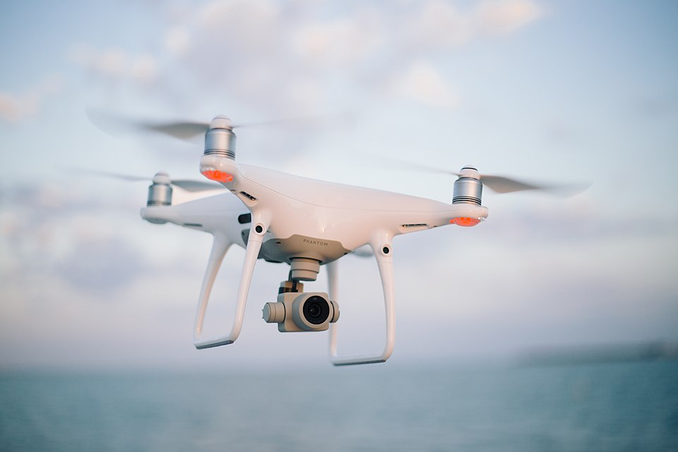

E08 — Sistemas de Control
"El control es cómo un sistema se corrige a sí mismo. Sin él, los drones se caen, los autos no frenan a tiempo y tu termostato oscila para siempre." — la ingeniería de la auto-corrección
El control responde a una pregunta: ¿cómo hago que un sistema físico llegue a un objetivo y se mantenga ahí, a pesar de las perturbaciones? Es el cerebro de los sistemas autónomos, y donde la derivada e integral de M03 se vuelven un algoritmo que corre en tiempo real.
1. Lazo abierto vs lazo cerrado
LAZO ABIERTO: [Comando] → [Actuador] → [Sistema] → resultado (sin medir)
LAZO CERRADO: objetivo → (Σ) → [Controlador] → [Actuador] → [Sistema] → salida
↑ │
└──────────── sensor (feedback) ──────────────┘
el error = objetivo - salida realimenta la corrección2. El problema del control simple (on/off)
3. El controlador PID
- Proporcional: corrige proporcional al error actual. "Mucho error → mucha corrección."
- Integral: corrige según el error ACUMULADO. Elimina el error residual permanente.
- Derivativo: corrige según qué tan RÁPIDO cambia el error. Anticipa y frena el overshoot.
// PID en C — corre cada ciclo (ej, cada 10ms)
float kp = 2.0, ki = 0.5, kd = 1.0; // ganancias a ajustar
float integral = 0, error_previo = 0;
float pid(float objetivo, float medicion, float dt) {
float error = objetivo - medicion;
float P = kp * error; // proporcional
integral += error * dt;
float I = ki * integral; // integral (acumula)
float D = kd * (error - error_previo) / dt; // derivada (cambio)
error_previo = error;
return P + I + D; // señal de control (ej, PWM al motor)
}integral += error * dt es una integral numérica (suma de Riemann). (error - error_previo) / dt es una derivada numérica (cociente incremental). El PID es M03 discretizado corriendo en un microcontrolador a 100 Hz. La teoría matemática literalmente vuela un dron.
4. Qué hace cada término (intuición)
| Término | Pregunta que responde | Si falta... |
|---|---|---|
| P | ¿Cuán lejos estoy del objetivo AHORA? | No corrige nada (sistema pasivo) |
| I | ¿Vengo arrastrando un error? | Queda error permanente (nunca llega exacto) |
| D | ¿Me estoy acercando muy rápido? | Overshoot y oscilación |
5. Sintonización (tuning)
kp, ki, kd es un arte. Mucho P → oscila. Mucho I → lento e inestable. Mucho D → sensible al ruido. Métodos: prueba y error guiada, Ziegler-Nichols, o auto-tuning.6. Estabilidad
7. Control moderno: del PID al ML
8. Dónde está el control
- Drones: PID en cada eje mantiene el equilibrio 400 veces/seg.
- Cruise control: mantiene velocidad ajustando el acelerador.
- Impresora 3D / CNC: control de posición y temperatura.
- Cohetes (SpaceX): control de vectorización del empuje para aterrizar.
- Data centers: control de temperatura y carga.

9. Práctica
- Simulá un PID en Python: un "auto" que debe llegar a una velocidad objetivo. Graficá con distintos kp/ki/kd.
- Reto físico: balanceá una pelota en una viga, o un robot auto-balanceado (2 ruedas) con PID + giroscopio (E05).
- PID sin las matemáticas (Brian Douglas) — la mejor intro visual.
🎛️ Simulador PID interactivo — altitud de un dron
10. Errores típicos
dt: si el loop no corre a intervalo constante, la integral y derivada se calculan mal. Usá un timer (E04) para dt fijo.11. Recursos
- Control Systems Lectures (Brian Douglas) — la mejor serie de control
- "Feedback Control of Dynamic Systems" (Franklin) — el clásico
python-controllibrary para simular
✅ Checkpoint
1. ¿Diferencia entre lazo abierto y cerrado?
Lazo abierto actúa sin medir el resultado (ciego). Lazo cerrado mide la salida y corrige según el error (objetivo − medición), auto-corrigiéndose ante perturbaciones. El feedback es la base del control serio.
2. ¿Qué hace cada término del PID?
P: corrige proporcional al error actual. I: corrige según error acumulado (elimina error residual). D: corrige según qué tan rápido cambia el error (anticipa, frena overshoot). Juntos llevan el sistema al objetivo de forma suave y precisa.
3. ¿Cómo aparece el cálculo de M03 en el PID?
integral += error*dt es una integral numérica (suma de Riemann); (error−error_previo)/dt es una derivada numérica. El PID es cálculo de M03 discretizado corriendo en tiempo real en un MCU.
4. ¿Qué es la estabilidad de un sistema?
Un sistema estable vuelve al objetivo tras una perturbación (pelota en un bowl). Uno inestable se aleja cada vez más (pelota en una colina → oscilación creciente). El análisis con Laplace/polos (E06) lo predice matemáticamente.
5. ¿Qué relación hay entre PID y reinforcement learning?
Ambos llevan un sistema a un objetivo. En PID un ingeniero ajusta kp/ki/kd; en RL (M39) el agente APRENDE la política de control. PID = control clásico, RL = control aprendido — espejo de DSP (kernel diseñado) vs CNN (kernel aprendido).
6. ¿Qué es integral windup y cómo se evita?
Cuando el actuador se satura, el término integral sigue acumulando error, causando una recuperación brusca y con overshoot. Se evita limitando (clamp) el valor de la integral.
🧠 Autoevaluación rápida
Respondé sin mirar arriba. Cada pregunta te explica el porqué.
1. ¿Qué distingue a un control de lazo cerrado?
2. Tu PID deja al sistema estable pero SIEMPRE un poco por debajo del objetivo. ¿Qué término te falta?
3. El término D del PID…
(error − error_previo) / dt. Como derivar amplifica el ruido, con sensores ruidosos se usa solo PI o se filtra la medición (E07) antes del D.